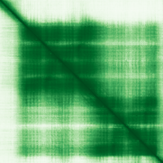
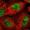

type: protein-evaluation gene: "CALML6" date: 2026-05-31 tags: [protein-scout, nucleus-cytoplasm, evaluation] status: scored ---
CALML6 核-胞质蛋白
| 维度 | 得分 | 权重 | 加权 | 摘要 |
|---|---|---|---|---|
| 核定位特异性 | 6/10 | ×4 | 24.0 | UniProt Cytoplasm + Nucleus ECO:0000269; GO cytoplasm IBA + nucleus IEA |
| 蛋白大小 | 7/10 | ×1 | 7.0 | 181 aa |
| 研究新颖性 | 10/10 | ×5 | 50.0 | PubMed strict=12, broad=18 |
| 三维结构 | 7/10 | ×3 | 21.0 | AlphaFold pLDDT 78.4 |
| 调控结构域 | 5/10 | ×2 | 10.0 | EF-hand calmodulin-like |
| PPI 网络 | 4/10 | ×3 | 12.0 | STRING calmodulin network (database-driven), IntAct limited |
| 加权总分 | 124/180** | |||
| 互证加分 | +1.0 | ECO:0000269 for both nucleus + cytoplasm | ||
| 归一化总分 (÷1.83) | 67.8/100** |
核定位证据: UniProt Cytoplasm + Nucleus ECO:0000269 (experimental). GO cytoplasm IBA + nucleus IEA. Calmodulin-like 6.
HPA IF 状态: IF thumbnail only — HPA 暂无 IF 原图，仅获取到 60x60 缩略图，不能作为可靠定位证据。核定位基于 UniProt + GO-CC。

PAE 图像已获取。结构判断基于 AlphaFold pLDDT 统计。
PPI 网络（三源综合）
| Partner | Source | Score/Evidence | Relevance |
|---|---|---|---|
| NOS1 | STRING | score=0.999, exp=0.046 | Calmodulin-binding; mostly database-driven (0.9) |
| CAMK2A | STRING | score=0.999, exp=0.254 | Calmodulin-dependent kinase; partial experimental support |
| RYR1 | STRING | score=0.999, exp=0.218 | Calcium channel; calmodulin family linkage |
| KRAS | STRING | score=0.998, exp=0.097 | RAS signaling; database annotation |
| PPP3CA | STRING | score=0.997, exp=0.147 | Calcineurin; calmodulin-binding |
| PCP4 | IntAct | two hybrid array | Also UniProt (3 experiments); calmodulin regulator |
| GRAMD1A | IntAct | anti tag coIP | Cholesterol transport |
IntAct 数据: PCP4 (two hybrid array), GRAMD1A (coIP)。STRED 高分主要来自数据库注释 (database=0.9)，calmodulin 家族泛连接，非特异性互作。无 BioGrid 补充数据。
Experimental dual localization.

关键文献
| PMID | 标题 |
|---|---|
| 30699354 | The EF-Hand Protein CALML6 Suppresses Antiviral Innate Immunity by Impairing IRF3 Dimerization. |
| 39155627 | A Pyroptosis-Related Gene Signature Predicts Prognosis and Tumor Immune Microenvironment in Colorect |
| 32303555 | CALML6 Controls TAK1 Ubiquitination and Confers Protection against Acute Inflammation. |
| 38745046 | EP4-induced mitochondrial localization and cell migration mediated by CALML6 in human oral squamous |
| 33676152 | A comparative genomic database of skeletogenesis genes: from fish to mammals. |
HPA IF 图像已本地嵌入。
PAE 图像暂无数据（未生成本地图片或未可靠获取），结构判断基于AlphaFold pLDDT统计。